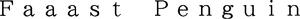

Trade Mark Journal No.2025/041 10 October 2025
WO0000001877191 (9,41)
Office of origin: Japan
Date of International Registration:2 June 2025
Date of designation in the UK:
2 June 2025

- Class 9
- Computer game software, recorded; downloadable video game software; downloadable electronic game programs; interactive video game programs; downloadable video game programs for arcade video game machines; virtual reality game software; consumer video game programs; game programs for arcade video game machines; memory cards for video game machines; downloadable computer programs for mobile phones; downloadable computer programs for smartphones; application software; computer programs; web site development software; computer peripheral devices; mousepads; telecommunications apparatus; earphones; loudspeakers; headsets; personal digital assistants; smartphones; parts and accessories for personal digital assistants; electronic data processing machines, apparatus and their parts; electronic circuits and CD-ROMs recorded with programs for hand-held games with liquid crystal displays; downloadable music files; downloadable image files; electronic publications, downloadable.
- Class 41
- Organization, arranging and conducting of on-line game competitions; organization of electronic game competitions; on-line game services; providing online voices and images in the field of game characters; providing on-line computer games; organization of competitions [education or entertainment]; organization, arranging and conducting of computer game events; animation film production, other than advertising films; animation film distribution and screening, other than advertising films; arranging of computer games; animation production services; production of shows and films; production and distribution of television game shows; electronic games services provided by means of the website; electronic games services provided by means of the Internet; interactive entertainment services; provision of entertainment information via the Internet or the on-line services; providing amusement arcade services; providing information relating to the scores of the user of on-line video games; educational and instruction services relating to arts, crafts, sports or general knowledge; arranging, conducting and organization of seminars; providing online electronic publications, not downloadable; reference libraries of literature and documentary records; book rental; art exhibition services; publishing services; arranging and planning of movies, shows, plays or musical performances; providing videos from the internet, not downloadable; movie theatre presentations or movie film production and distribution; providing digital music from the Internet, not downloadable; presentation of live performances; direction or presentation of plays; musical entertainment services; production of radio or television programs; production of videotape film in the field of education, culture, entertainment or sports [not for movies or television programs and not for advertising or publicity]; directing of radio and television programs; operation of video and audio equipment for the production of radio and television programs; sporting activities; organization of entertainment events excluding movies, shows, plays, musical performances, sports, horse races, bicycle races, boat races and auto races; providing audio or video studios; providing exercise facilities; providing amusement facilities; providing facilities for movies, shows, plays, music or educational training; booking of seats for shows; photography; language interpretation; translation.
historia Inc.
Representative: SHIRAHAMA Shuji, Akasaka Daiichi Bldg.,, 4-9-17, Akasaka, Minato-ku, Tokyo 107-0052, JAPAN